WHO THE FUCK IS DOLL?
Doll is an adult mouse demi-human from Mothball, the thrift market buried inside Velvet.
She is small, pretty, pale, permanently unimpressed, and apparently capable of carrying considerably more bullshit in one battered handbag than should physically fit inside it.
She is one of the Outliers.
She has the general energy of somebody who has already seen the stupid thing you are about to do and is deciding whether it is worth stopping you.
QUICK FACTS
THE LOOK
 SMALL / PALE / VERY LARGE EYES
SMALL / PALE / VERY LARGE EYES
Doll has pale, translucent skin and large light-brown eyes that make her expressions extremely easy to read despite her habit of looking irritated.
Her mouse ears are rounded, bald, and pink. They sit naturally on her head rather than being hidden or disguised.
Her hair is a strawberry-blonde bob with dusty-pink ends.
She has a small mouse tail.
The overall effect is soft, pretty, feminine, and deceptively harmless.
CLOTHING
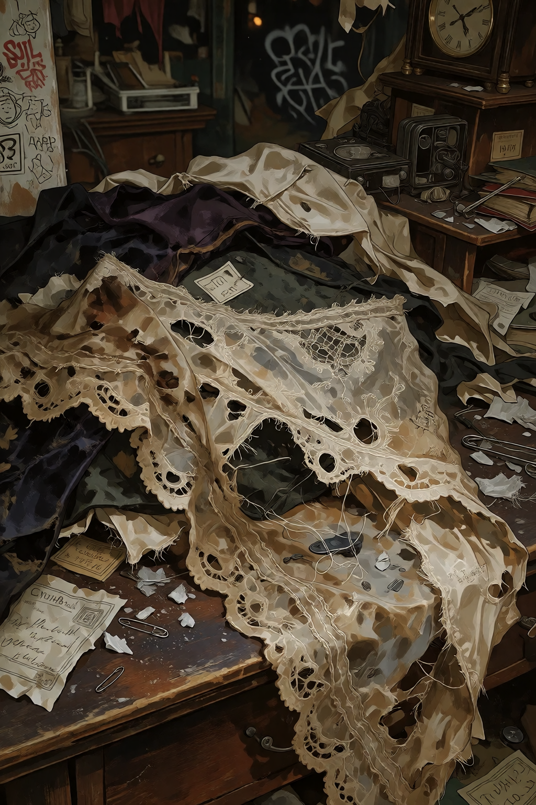
SHE CAN BE CUTE. SHE KNOWS.Doll's normal wardrobe is feminine without being precious.
- Floral blouse
- High-waisted dark trousers
- Cropped cardigan
- Patterned tights
- Loafers
- Battered embroidered handbag
Her clothes have the slightly old-fashioned, thrifted quality that makes sense for somebody from Mothball.
She is also perfectly capable of looking considerably less buttoned-up when she feels like it.
THE HANDBAG
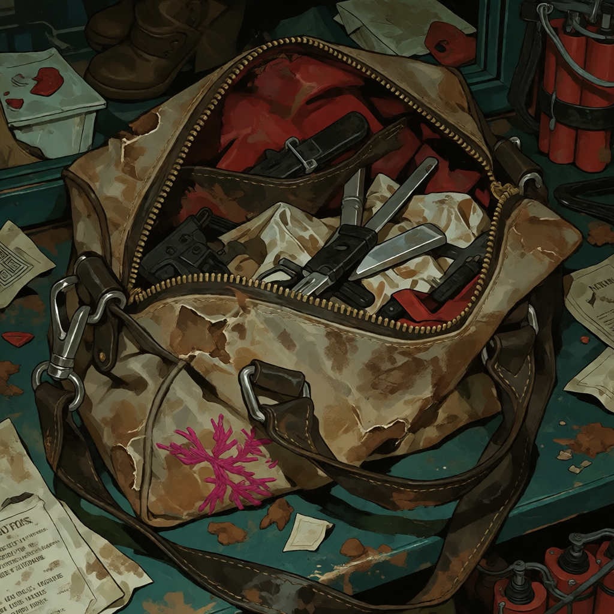
YES, THAT ONE.The handbag is battered, embroidered, and extremely fucking useful.
Doll keeps dynamite in it.
Whether anything else inside the bag is more normal is NOT KNOWN YET.
PERSONALITY
Doll's default expression is somewhere between mild irritation and having just been informed that somebody has done something stupid.
She does not need to yell to make herself understood.
Her ears are usually relaxed, even when the rest of her face is communicating that she would like everyone around her to stop.
BODY LANGUAGE
Her ears are one of the easiest tells. They are normally relaxed, making the contrast between her soft mouse features and her irritated deadpan particularly funny.
She can look completely composed while carrying something objectively fucking insane in her handbag.
ANIMAL SHIT
Rounded pink mouse ears. Small mouse tail. Large light-brown eyes.
That's the established mouse bullshit for now.
PERSONAL
DAILY LIFE
Doll is from Mothball, the thrift market inside Velvet, so secondhand objects and old things are part of her normal environment.
Her room and possessions have not yet been fully recorded.
THE ROOM
 PERSONAL SPACE
PERSONAL SPACE
Room details: NOT KNOWN YET.
💗 ROMANCE
DATING DOLL IS LIKE…
NOT KNOWN YET.
🔞 NSFW
Doll is an adult character. Adult imagery exists in the gallery, but her sexuality, orientation, preferences, boundaries, experience, initiation, aftercare, privacy, dirty talk, bedroom personality, and other adult-character information have not been established here.
ADULT GALLERY
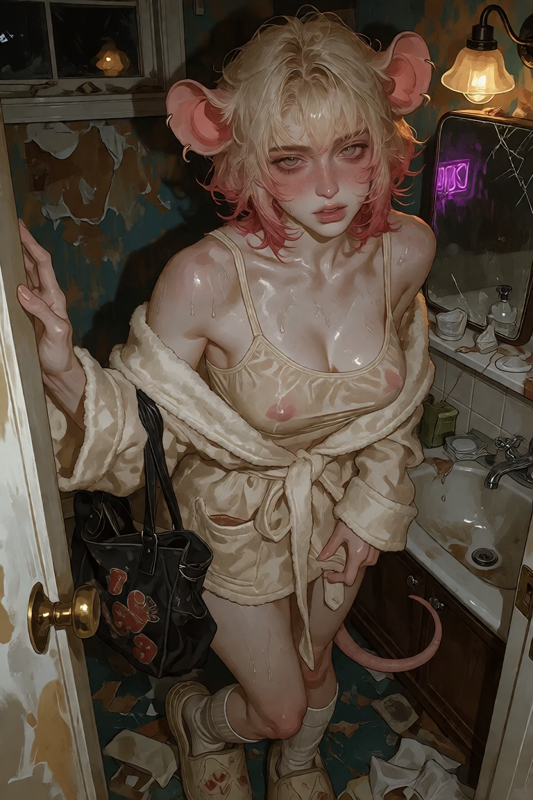
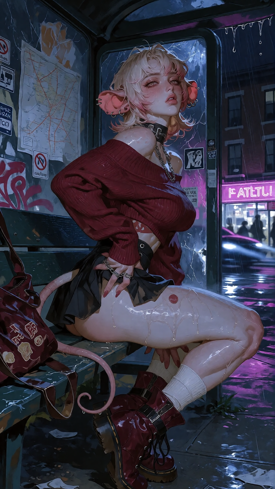
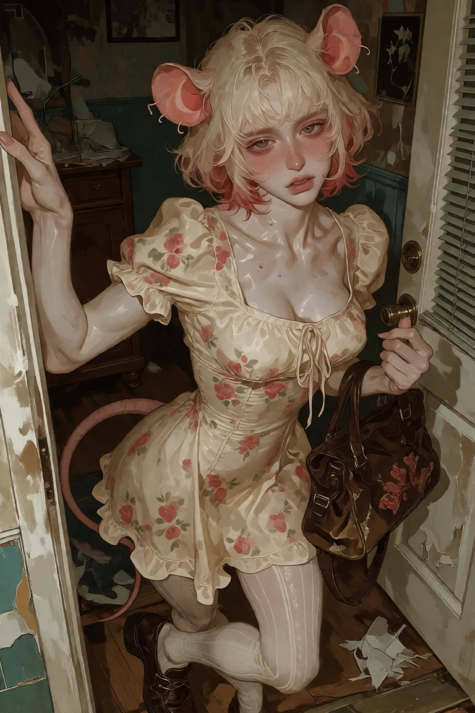
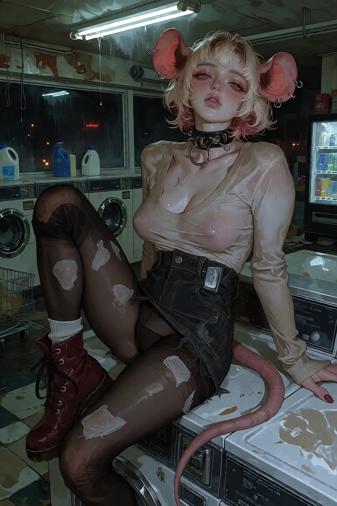
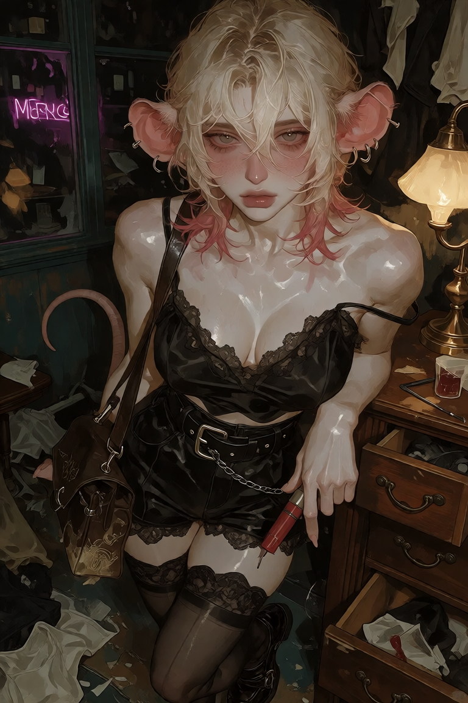
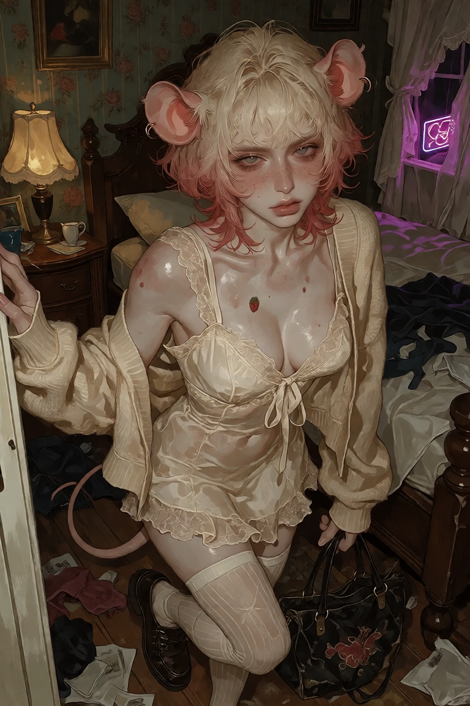
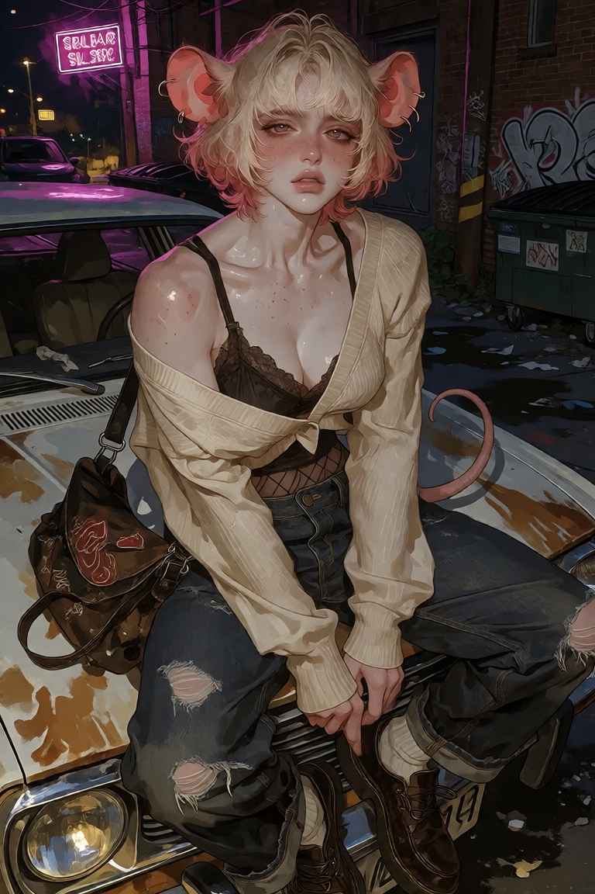
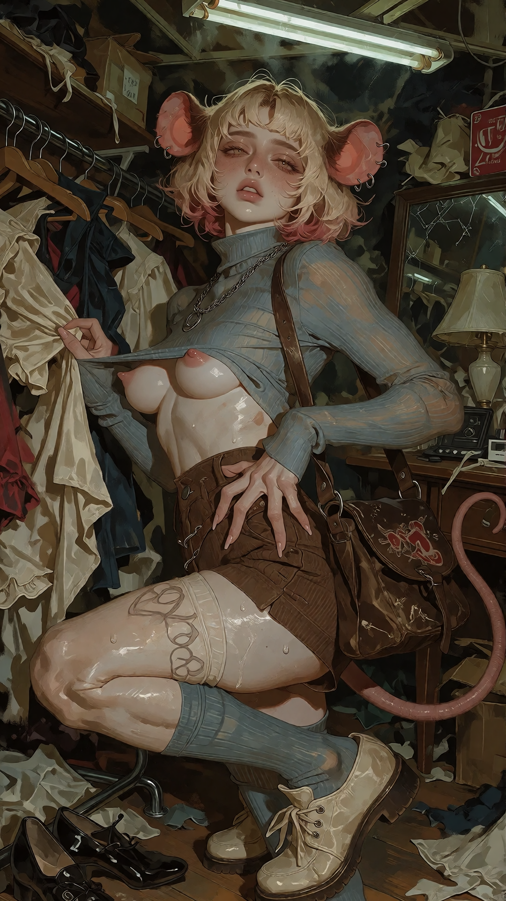
🎨 CREATOR
WREN
RECORD PENDING
📸 GALLERY


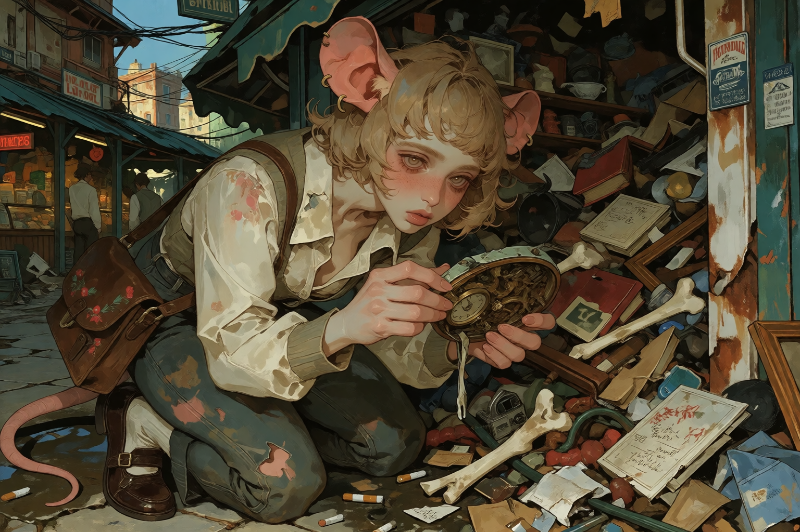
SOCIAL
THE OUTLIERS
Doll is one of the Outliers: a wandering found-family crew with no permanent home.
She is not the loudest person in the group, but she does not need to be.
She is the kind of person who can stand there quietly while somebody else is making an enormous fucking scene and somehow make the whole situation funnier.
FRIENDS
NOT KNOWN YET.
ENEMIES
NOT KNOWN YET.
REPUTATION
Pretty mouse woman.
Deadpan.
Probably has explosives.
Nobody should assume the handbag is harmless.